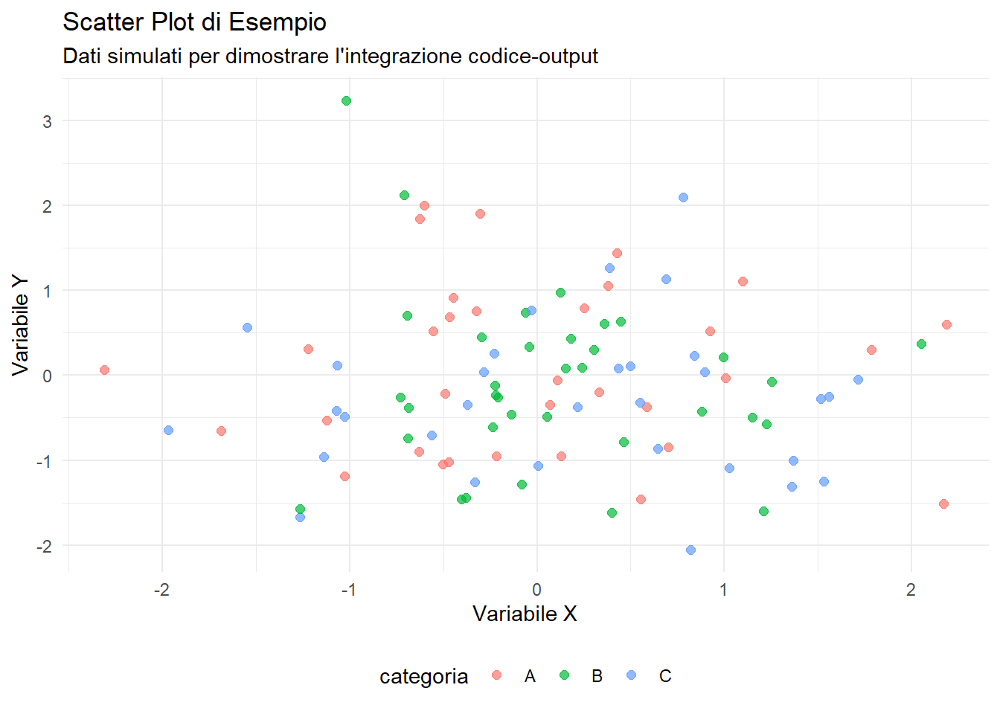

Questo sito web dimostra le potenzialità di Quarto per creare contenuti scientifici e di analisi dati integrati. Quarto è un sistema di pubblicazione tecnica e scientifica open-source costruito su Pandoc che permette di:
🔬 Integrare codice, risultati e narrativa
📊 Creare visualizzazioni interattive
📄 Produrre documenti riproducibili
🌐 Pubblicare facilmente su web
Caratteristiche di questo Sito
Esplora le diverse sezioni per vedere come Quarto permette di:
Genera report che si aggiornano automaticamente quando i dati cambiano.
Esempio Rapido
Ecco un semplice esempio di come Quarto integra codice R e risultati:
Code
# Carica le librerie necessarielibrary(ggplot2)library(dplyr)# Crea un dataset di esempioset.seed(123)dati_esempio <-data.frame(x =rnorm(100),y =rnorm(100),categoria =sample(c("A", "B", "C"), 100, replace =TRUE))# Statistiche rapidesummary(dati_esempio)
x y categoria
Min. :-2.30917 Min. :-2.0532 Length:100
1st Qu.:-0.49385 1st Qu.:-0.8011 Class :character
Median : 0.06176 Median :-0.2258 Mode :character
Mean : 0.09041 Mean :-0.1075
3rd Qu.: 0.69182 3rd Qu.: 0.4678
Max. : 2.18733 Max. : 3.2410
Code
# Visualizzazioneggplot(dati_esempio, aes(x = x, y = y, color = categoria)) +geom_point(alpha =0.7, size =2) +theme_minimal() +labs(title ="Scatter Plot di Esempio",subtitle ="Dati simulati per dimostrare l'integrazione codice-output",x ="Variabile X", y ="Variabile Y") +theme(legend.position ="bottom")

Esempio di grafico integrato
Perché Usare Quarto?
Riproducibilità: Il codice e i risultati sono sempre sincronizzati
Flessibilità: Supporta R, Python, Julia e Observable
Professionalità: Output di alta qualità per web, PDF, Word, e altro
Facilità: Sintassi semplice e potenti funzionalità automatiche
Inizia esplorando le sezioni del menu per vedere tutte le potenzialità in azione!
Source Code
---title: "Benvenuto nel Sito di Analisi Dati con R e Quarto"format: html: code-fold: true---# IntroduzioneQuesto sito web dimostra le potenzialità di **Quarto** per creare contenuti scientifici e di analisi dati integrati. Quarto è un sistema di pubblicazione tecnica e scientifica open-source costruito su Pandoc che permette di:- 🔬 Integrare codice, risultati e narrativa- 📊 Creare visualizzazioni interattive- 📄 Produrre documenti riproducibili- 🌐 Pubblicare facilmente su web## Caratteristiche di questo SitoEsplora le diverse sezioni per vedere come Quarto permette di:### 🔍 [Analisi Esplorativa](analisi-esplorativa.qmd)Scopri come condurre analisi esplorative complete con statistiche descrittive e visualizzazioni.### 📈 [Modelli Statistici](modelli-statistici.qmd)Impara a costruire e interpretare modelli statistici con output formattati automaticamente.### 🎨 [Visualizzazioni](visualizzazioni.qmd)Crea grafici professionali e interattivi che si integrano perfettamente nel testo.### 📊 [Report Dinamico](report-dinamico.qmd)Genera report che si aggiornano automaticamente quando i dati cambiano.## Esempio RapidoEcco un semplice esempio di come Quarto integra codice R e risultati:```{r}#| echo: true#| warning: false# Carica le librerie necessarielibrary(ggplot2)library(dplyr)# Crea un dataset di esempioset.seed(123)dati_esempio <-data.frame(x =rnorm(100),y =rnorm(100),categoria =sample(c("A", "B", "C"), 100, replace =TRUE))# Statistiche rapidesummary(dati_esempio)``````{r}#| echo: true#| fig-cap: "Esempio di grafico integrato"# Visualizzazioneggplot(dati_esempio, aes(x = x, y = y, color = categoria)) +geom_point(alpha =0.7, size =2) +theme_minimal() +labs(title ="Scatter Plot di Esempio",subtitle ="Dati simulati per dimostrare l'integrazione codice-output",x ="Variabile X", y ="Variabile Y") +theme(legend.position ="bottom")```## Perché Usare Quarto?1. **Riproducibilità**: Il codice e i risultati sono sempre sincronizzati2. **Flessibilità**: Supporta R, Python, Julia e Observable3. **Professionalità**: Output di alta qualità per web, PDF, Word, e altro4. **Facilità**: Sintassi semplice e potenti funzionalità automaticheInizia esplorando le sezioni del menu per vedere tutte le potenzialità in azione!